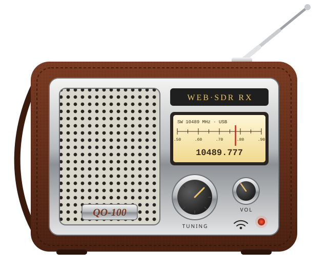

QO-100 WebSDR Pocket Radio
An ESP8266 that plays the QO-100 narrowband transponder like a little stand-alone shortwave set. It listens to 10489.777 MHz USB on the BATC or IS0GRB WebSDR and outputs audio on one pin. You tune it from your phone.
QO-100 dar bant transponderini küçük bir kısa dalga radyosu gibi çalan ESP8266. 10489.777 MHz USB dinler, ayarları telefondan yapılır.
1 · Flash from the browser / Tarayıcıdan yükle
- Connect the board by USB and click Install firmware. Choose the serial port (
CH340,CP210x…). - On a first install, tick Erase device. This takes about 1 minute.
- On Linux, if the port is not listed, run
sudo usermod -aG dialout $USERand log in again. Chromium installed as a snap cannot open serial ports.
Yükleme sırasında GPIO3'teki ses filtresini ayırın.
2 · Connect it to WiFi / WiFi'ye bağla
English
- Power the radio and wait about 25 s.
- On your phone, join the WiFi network:
SSID: qo100Password: 10489777
- If the phone says “no internet”, choose Stay connected. Turn off mobile data for a minute.
- The setup page opens by itself, or go to http://192.168.4.1.
- Tap your home network, enter its password, and press Kaydet ve yeniden başlat (Save & restart).
- Put your phone back on your home WiFi.
Türkçe
- Radyoya güç verin, yaklaşık 25 sn bekleyin.
- Telefonda şu WiFi ağına bağlanın:
Ağ: qo100Şifre: 10489777
- “İnternet yok” uyarısında Bağlı kal seçin. Mobil veriyi bir dakikalığına kapatın.
- Kurulum sayfası kendiliğinden açılır, ya da http://192.168.4.1 adresine gidin.
- Ev ağınıza dokunun, şifreyi girin, Kaydet ve yeniden başlat'a basın.
- Telefonu tekrar ev WiFi'nize bağlayın.
3 · Listen / Dinle: qo100.local
On the same WiFi, open http://qo100.local. Android: use the radio's IP address instead (shown in your router's client list as qo100). The radio starts playing about 6 s after power-on, with the last settings.
Aynı ağda http://qo100.local adresini açın. Android'de radyonun IP adresini kullanın. Radyo, açılıştan yaklaşık 6 sn sonra son ayarlarla çalar.
| Control | What it does / İşlevi |
|---|---|
| −1k −100 −10 +10 +100 +1k | Step the frequency in Hz / Frekansı Hz adımlarıyla değiştir |
| Fine-tune slider | ±3 kHz around 10489.777 MHz / ±3 kHz ince ayar |
| MHz box · Git · Merkez | Type a frequency, or go back to 10489.777 / Frekans gir ya da merkeze dön |
| Ses açık / SESSİZ · volume | Mute and volume / Sessiz ve ses seviyesi |
| Squelch eşiği | Cut audio below an S-meter level, far left = off / S-metre eşiğinin altında sesi kes |
| WebSDR sunucusu | BATC (eshail.batc.org.uk) or IS0GRB |
All settings are saved and come back after a power cut. / Tüm ayarlar kaydedilir, kapatıp açınca aynı yerden başlar.
4 · Circuit / Devre
GPIO3 (RX) ──[1k]──┬──[4.7k]──┬──||──> amplifier (PAM8403 / LM386)
│ │ 1µF
[47n] [10n]
│ │
GND ───────────────┴──────────┴──────> amplifier GND
Two RC poles at about 3.4 kHz turn the 512 kbit/s 1-bit sigma-delta stream from the I2S peripheral into audio. For a filter that can stay connected while flashing, use 4.7k/10n → 47k/1n (not yet tested). Add 470–1000 µF + 100 nF across 3.3 V if you hear WiFi buzz.
İki RC kutbu (≈3.4 kHz), I2S'in ürettiği 1-bit sigma-delta akışı sese çevirir. WiFi vızıltısı için 3.3 V'a 470–1000 µF + 100 nF ekleyin.
How it works / Çalışma mantığı
The I2S DMA is refilled inside its own interrupt, so audio does not depend on what the main loop is doing (TLS, web requests, flash writes). If the network stalls, the output stays at quiet mid-scale and does not click.
I2S DMA kendi kesmesi içinde doldurulur. Ana döngü meşgulken bile ses kesilmez, ağ takılırsa tık yerine sessizlik olur.
WebSDR ses formatı PA3FWM'ye aittir. WebSDR işletmecilerine saygı gösterin: radyo başına tek bağlantı, dinlemiyorken kapatın.